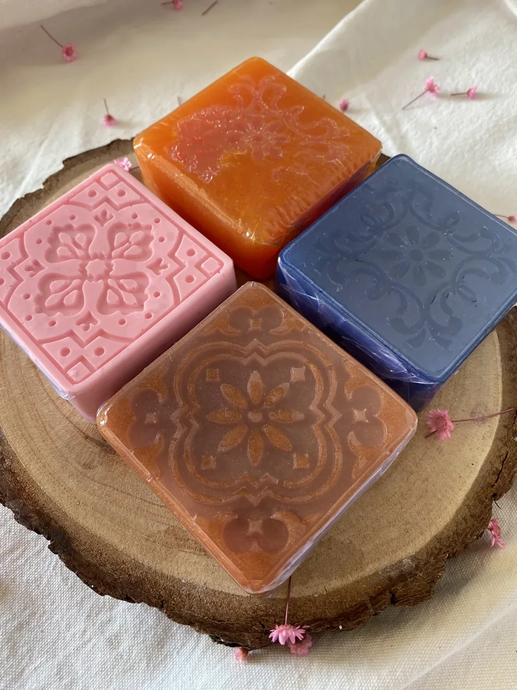
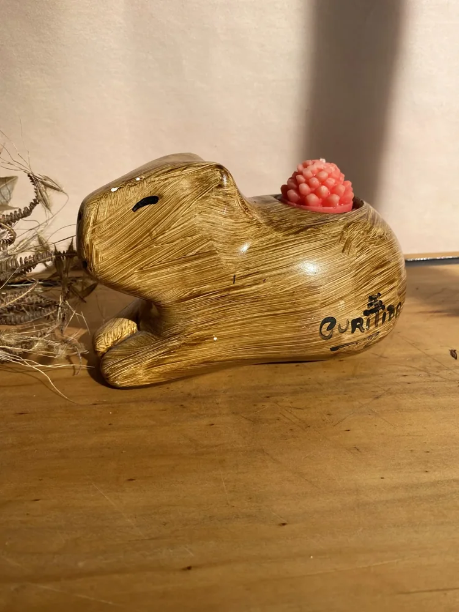
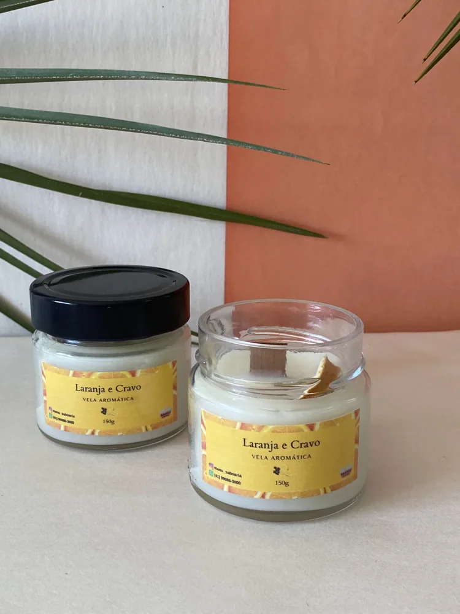
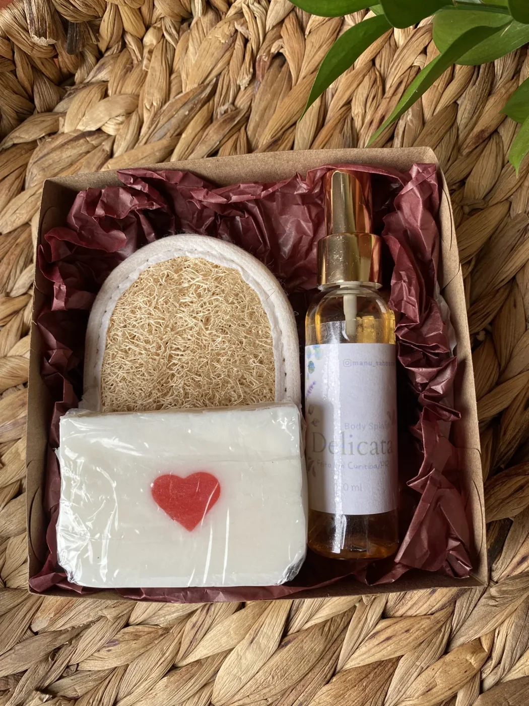
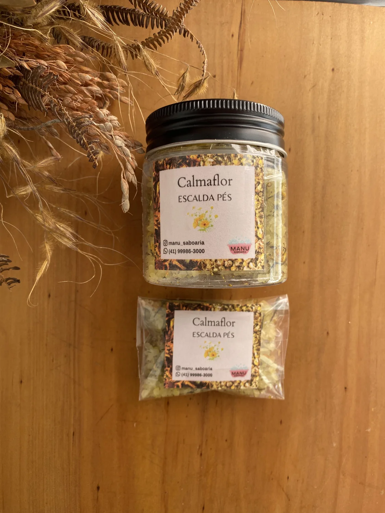

BEM-VINDO AO UNIVERSO DO MANU
Feito à mão
para o seu dia.
Sabonetes, velas e aromas feitos em Curitiba. Encontre seus favoritos e escolha um cuidado para você, para a casa ou para presentear.
Produtos aromáticos e para banho.
O artesanal nos detalhes. O cuidado na escolha.


 UMA PAUSA PARA VOCÊPara o seu banho
UMA PAUSA PARA VOCÊPara o seu banho

UM AMBIENTE QUE ACOLHEPara a sua casa
UM GESTO DE CUIDADOPara presentearENCONTRE O SEU FAVORITO
Escolha o seu
momento de cuidado.
Explore os aromas, as texturas
e as possibilidades de presentear.
Vamos tentar outro aroma?
Nenhum produto encontrado. Experimente outra busca ou categoria.
Veja todas as 137 imagens na galeria
Valores do catálogo do Manu. Aromas e disponibilidade são confirmados no atendimento. Frete calculado à parte.
PARA QUEM VOCÊ QUER BEM
Um presente.
Um jeito de cuidar.
Um aniversário, um agradecimento ou uma visita especial. Combine sabonetes e aromas em um presente escolhido com atenção. O Manu ajuda você a encontrar a composição.
Montar uma composiçãoFEITO PERTO, COM DEDICAÇÃO
O cuidado aparece
nos detalhes.
Com o Manu, o trabalho artesanal aparece no relevo de um sabonete, na escolha de um aroma e na maneira de compor um presente. São detalhes para acompanhar o cuidado de todos os dias.
Os produtos são feitos em Curitiba. Converse com o Manu, conheça as opções e escolha o que combina com você e com o seu momento.
Acompanhe @manu_saboaria
feito em Curitiba, PR
Como faço meu pedido?
Escolha os produtos, adicione à sacola e toque em “Enviar pedido pelo WhatsApp”. A mensagem vai com os itens e valores para o Manu confirmar aromas, disponibilidade, pagamento e entrega. O pedido é concluído no atendimento.
Como funciona a entrega?
A marca Manu Saboaria é de Curitiba, PR. Consulte pelo WhatsApp as opções de entrega ou retirada, o frete e o prazo para o seu endereço antes de confirmar o pedido.
Posso escolher a fragrância?
Sim! As fotos mostram algumas opções da coleção. Informe o aroma de sua preferência nas observações da sacola; o Manu confirma o que está disponível e ajuda você a escolher.
Vocês montam presentes e lembrancinhas?
Fale com o Manu para combinar os produtos, a apresentação e a quantidade desejada. O valor e o prazo são definidos de acordo com a composição escolhida.
Quais são as formas de pagamento?
As opções de pagamento são informadas pelo Manu no atendimento pelo WhatsApp, antes da confirmação do pedido. Não é necessário cadastrar dados de pagamento neste site.
Como cuidar dos meus produtos?
Guarde os sabonetes em local seco e, após o uso, utilize uma saboneteira que permita o escoamento da água. Siga as orientações do rótulo. Mantenha velas acesas sob supervisão, longe de tecidos, crianças e animais, e apague antes de sair.